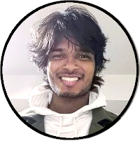

Anurag Gupta
I am interested in the area of process optimization, resource allocation, strategic planning, market analysis, risk assessment, engagement strategies, user experience, behavioral design, needs assessment.
Qualification
2024: M.S. in Electrical and Computer Engineering, Cornell University.
2020: M.Tech in Systems and Control Engineering, Indian Institute of Technology, Bombay. Recipient of the institute silver medal.
2016: B.Tech (with Honors) in Electrical Engineering and a minor in Industrial Design, Indian Institute of Technology, Bombay. Recipient of the undergraduate research award.
Experience
I have collaborated with Prof. John Boland as a summer intern at CRANN Institute, Trinity College, Dublin, for the period encompassing May 2015 to July 2015 under the Erasmus program. Moreover, I was a Research Scientist at Systemantics India Pvt. Ltd under the supervision of Dr. Jagannath Raju for the period beginning from November 2014 to December 2014.
During October 2016 to March 2017, I worked as a Research and Development Engineer at Works Application, Singapore, wherein I was involved in developing intelligent ERP (Enterprise Resource Planning) solutions for supply chain management.
After six months of corporate life, I decided to pursue my project aimed at innovating an easy to access framework for bicycle pooling inside universities campus and tech parks. While my ten months as a co-founder of Elegane Bikes, the project received recognitions from Andhra Pradesh government, FICCI, and was shortlisted for 4 months startup accelerator program organized by XLR8AP and IC2 institute, University of Texas, Austin. We were also endorsed by In2Korea and were invited to commercialize our technology in Seoul, South Korea.
Hobby
Sports: Badminton, climbing, squash, ice skating, cricket, tennis, table tennis.
Instruments: Piano, guitar, harmonica, flute, congo, dholak, kalimba.
Miscellaneous: Collecting outdated coins, reading books, sketching, photography.
Instruments: Piano, guitar, harmonica, flute, congo, dholak, kalimba.
Miscellaneous: Collecting outdated coins, reading books, sketching, photography.
If you want to talk with me about anything,
use the link above to schedule a call.
use the link above to schedule a call.
⟫ Find me